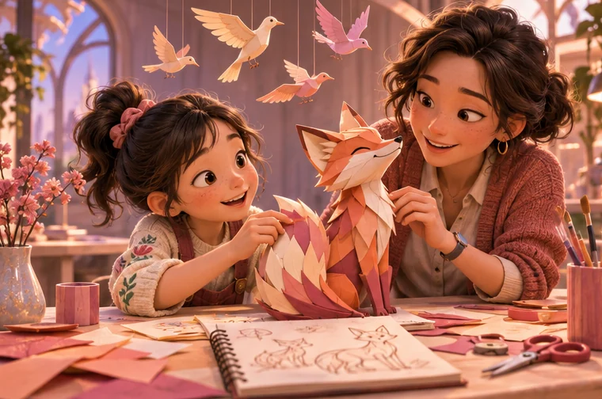

Проект программы для детей и родителей
Образовательная
программа «НейроДети»
Научиться создавать контент и цифровые продукты с помощью ИИ, проверить, как они работают, и представить свой семейный проект.
Перейти к модулям
Цель и формат
Программа рассчитана на совместную работу ребёнка и родителя. Участники осваивают генерацию текста, изображений, звука и видео, создают собственных AI-агентов, пробуют писать и проверять код с ИИ.
Занятие строится вокруг небольшой задачи. Участники формулируют замысел, выбирают инструмент, делают первую версию, проверяют её по критериям и вносят правки. Ребёнок предлагает идеи и объясняет свои решения. Взрослый помогает с доступом к инструментам, проверкой материалов и настройками публикации.
Ожидаемые результаты
- Составить и улучшить запрос к ИИ, проверить факты и выбрать подходящий результат.
- Создать серию изображений, оформить презентацию или карусель, озвучить персонажа и смонтировать короткий ролик или мультфильм.
- Создать собственного AI-агента с именем, ролью, инструкцией, правилами и критериями проверки.
- Собрать прототип сайта и небольшого приложения, объяснить работу основных частей кода и исправить найденную ошибку.
- Показать семейный проект, назвать вклад участников и объяснить, как проверялась работа ИИ.
Учебные модули
01Нейросети, запросы и цифровая грамотность
Изучаем. Возможности и ограничения ИИ. Где выбирать модель и как работать с интерфейсом. Роль, задача, контекст, требования и формат ответа. Проверка фактов и безопасная работа с личными данными.
Практика. Написать два запроса для одной задачи, сравнить ответы по критериям и объяснить, какой запрос работает лучше.
02Тексты и сценарии
Изучаем. Идеи, факты и источники. Диалог и голос героя. Сценарий, структура истории, подписи, посты и тексты для выступления. Редактура ответов ИИ.
Практика. Сделать сценарий короткой истории с началом, развитием и финалом, подготовить текст для озвучки.
03Изображения, персонажи и дизайн
Изучаем. Генерация и редактирование изображений, описания стиля, композиции, света и ракурса. Референсы и карта вымышленного персонажа. Обложки, рекламные макеты, карусели, слайды и презентации.
Практика. Создать карту героя и три изображения с ним в одном стиле. Собрать карусель или слайды для показа проекта.
04Анимация, клипы и раскадровка
Изучаем. Планы и движение камеры, последовательность кадров, раскадровка. Превращение изображения в короткий видеофрагмент. Проверка устойчивости образа и движения в кадре.
Практика. Сделать раскадровку из трёх сцен и оживить выбранные кадры для клипа.
05Аватары, голос, музыка и звук
Изучаем. Создание аватара, синхронизация речи с изображением, выразительная озвучка героя. Фоновая музыка, звуковые эффекты и разборчивость речи. Разрешения на использование изображения, голоса и музыки.
Практика. Собрать фрагмент с говорящим персонажем и звуковым оформлением, проверить синхронизацию и громкость.
06Монтаж фильма или мультфильма
Изучаем. Монтаж в CapCut или другом доступном редакторе. Расстановка сцен, ритм, длина планов, переходы, титры, субтитры и экспорт. Форматы коротких вертикальных роликов.
Практика. Смонтировать законченную историю из собственных кадров, озвучки и музыки, показать её семье и доработать по обратной связи.
07Медиа, выступления и портфолио
Изучаем. Замысел семейного блога, рубрики, съёмка в кадре и интервью. Понятные обложки и подписи, безопасное общение и цифровой след. Как представить работу в портфолио. Для взрослых — обзор услуг, поиска клиентов и принципов ценообразования.
Практика. Записать короткое выступление о проекте, подготовить обложку и описание. Формат показа согласуется с родителем.
08Создание собственных AI-агентов
Изучаем. Как дать агенту имя, назначить роль и написать инструкцию. Входные материалы, шаги работы, формат ответа, ограничения и проверка на примерах. Как передать результат от одного агента другому.
Практика. Настроить команду для творческой задачи. Например, Сценарист пишет план, Художник готовит запросы для кадров, а Редактор проверяет связность истории. Проверить каждого агента минимум на двух разных задачах.
09Учебный агент и семейное исследование
Изучаем. Репетитор или тьютор по выбранному предмету. Настройка уровня, подсказок и самопроверки. Поиск источников, сравнение ответов и фиксация собственных выводов.
Практика. Создать агента-репетитора и проверить объяснение на знакомой задаче. Собрать с ним небольшой путеводитель, викторину или заметку с источниками.
10Кодинг с ИИ и создание сайта
Изучаем. Как перевести идею в техническое задание. Структура HTML, стили CSS, простые сценарии JavaScript, редактирование через агента и чтение изменений. Навигация, работа на телефоне и проверка ссылок.
Практика. Собрать сайт о своём увлечении или персонаже. Проверить его на двух размерах экрана и исправить одну ошибку с помощью агента.
11Приложения, игры и автоматизация
Изучаем. Сценарий пользователя, состояние приложения, события, условия и простая логика. Деление задачи на функции, проверка обычных и ошибочных действий. Автоматизация повторяющихся действий на учебном примере.
Практика. Собрать викторину, планер, небольшую игру или приложение с понятной целью. Попросить члена семьи пройти сценарий, записать замечания и доработать прототип.
12Семейный проект и презентация
Изучаем. Как распределить работу, связать контент с цифровым продуктом, показать результат и рассказать о своей роли.
Практика. Например, снять мультфильм и собрать сайт о нём или разработать учебного агента и сделать к нему викторину. Представить проект, инструкции агентам и результаты проверки.
Как работают агенты на проекте
Сценарист
Предлагает сюжет, диалоги и список сцен по вашей идее.
Художник
Подбирает стиль, составляет запросы к визуальным моделям и проверяет образ героя в разных кадрах.
Разработчик
Помогает собрать страницы и функции, объясняет изменения в коде.
Проверяющий
Готовит сценарии проверки, фиксирует ошибки и помогает проверить исправления.
Семья может дать агентам собственные имена и правила. Перед передачей сценария, визуала или кода следующему агенту участники проверяют, что результат соответствует задаче.
Итоговый проект и оценка
Текущая работа проверяется по результатам практики в каждом модуле. На итоговом показе семья демонстрирует готовый продукт и объясняет, что изменилось после обратной связи.
- У проекта есть ясная задача, аудитория и работающий результат.
- Материалы оформлены в одном стиле, видео и звук проверены, основные функции сайта или приложения работают.
- У агента понятная инструкция и примеры задач, на которых проверили ответы.
- Участники могут объяснить собственный вклад, ошибки ИИ и внесённые исправления.
- Источники материалов, разрешения и публикация учтены в соответствии с форматом показа.
Условия реализации
Для практики планируются компьютер с браузером, интернет, редактор видео и доступ к выбранным сервисам ИИ. Для несовершеннолетних порядок доступа к сервисам и публикации работ согласуется со взрослым с учётом правил площадок.
Статус документа
Опубликован проект программы. Возрастные группы, форма и сроки обучения, академические часы по модулям, календарный учебный график и сведения об организаторе будут указаны после согласования и утверждения.
Сведения и документыОснова программы — десять уроков курса и практические задания AI Creator. Канал «НейроДети» в Telegram.